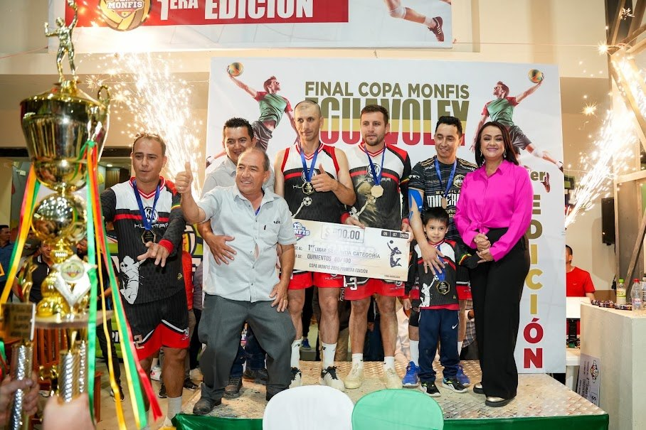
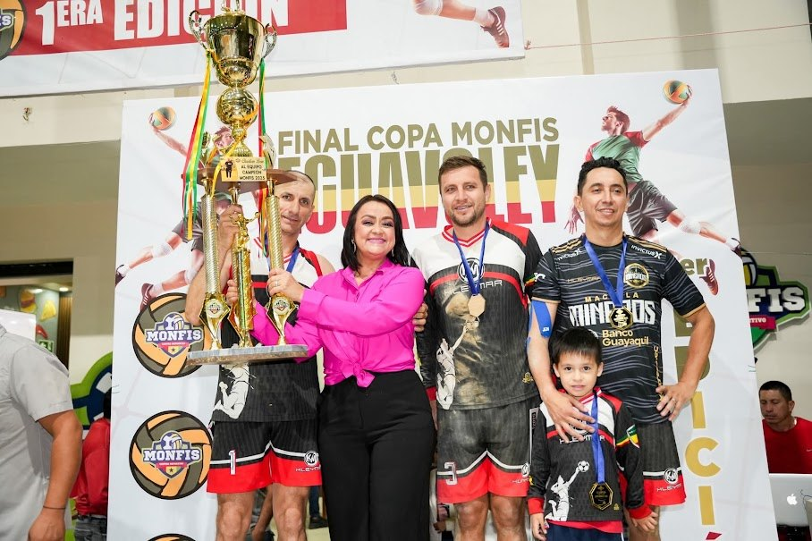

El deporte que nos une
El deporte que nos uneECUAVÓLEY
Canchas de arena bajo techo, listas para tu partido o tu campeonato.
Canchas de ecuavóley y fútbol, juegos para los niños, restaurante y el torneo de ecuavóley que llena nuestras tribunas cada año.
Elige cómo quieres disfrutar hoy. Para horarios, disponibilidad y tarifas, escríbenos y te respondemos por WhatsApp.
El deporte que nos uneCanchas de arena bajo techo, listas para tu partido o tu campeonato.

Arma tu equipo y reserva la canchita.

Los pequeños juegan mientras tú disfrutas del partido.

Comida y bebidas frente a la cancha, después del juego o en familia.
Una opción más para reunirse y pasarla bien.

Celebra tus fechas especiales con espacio para todos.

Campeonato de ecuavóley en Piñas, El Oro
Más que un campeonato, un compromiso con el futuro del ecuavóley.
Una iniciativa deportiva que nace en Piñas para fomentar y proyectar el ecuavóley: escenarios competitivos donde los jugadores demuestran su talento y las nuevas generaciones encuentran oportunidades para crecer.
La Copa Monfis es una iniciativa del señor Monfilio Granda junto a sus hijos, que comparten el compromiso de aportar al deporte del cantón Piñas. Nace de una convicción: el deporte forma personas, descubre talentos y abre espacios de crecimiento para los jóvenes.
La meta va más allá de organizar un torneo. Se trata de construir una competencia que crezca con cada edición, convoque a destacados exponentes del ecuavóley y se consolide como uno de los principales campeonatos de Piñas y de la provincia de El Oro.

El ecuavóley es parte de nuestra identidad. Ha unido generaciones en barrios, comunidades y familias, impulsado durante décadas por la pasión de jugadores, dirigentes y aficionados.
Hoy vive una etapa de profesionalización. Desde 2025, Ecuador tiene una Liga Nacional de Ecuavóley (LNE), con equipos de varias ciudades del país, entre ellos clubes de El Oro como Piñas Dorados y Machala Mineros. La Copa Monfis comparte esa visión: el ecuavóley puede ser un camino de formación, competencia y crecimiento.

Cuando los padres acompañan a sus hijos y una comunidad se reúne alrededor de una cancha, el deporte cumple una función social. El ecuavóley junta a padres, hijos, hermanos y amigos en una misma pasión.
Por eso promovemos la convivencia, el respeto, la disciplina y el compañerismo. Queremos formar mejores jugadores y también una comunidad que apoye a sus jóvenes.
Información sobre la LNE: Diario Expreso y Expreso, Clausura 2026. La Copa Monfis no tiene convenio con la LNE.
La primera edición marcó el inicio del proyecto. La segunda confirmó su crecimiento.

2025, los inicios

2026, crecimiento y consolidación
En ambas ediciones, cada categoría repartió el mismo premio. Cada equipo inscribe hasta 5 jugadores.
Crecemos en participación, ampliamos oportunidades y seguimos impulsando el ecuavóley.

La Copa Monfis reconoce el resultado de cada equipo y también el esfuerzo de cada deportista.
El equipo ganador recibe la copa de campeón.
Los 5 jugadores de los equipos en 1.º, 2.º y 3.º lugar reciben medalla.
Medalla para la actuación más destacada de cada encuentro.
Reconocimiento especial entregado en la premiación final.
Partidos, finales, amigos, Navidad y fin de año. Toca una foto para verla en grande.
Somos un espacio deportivo, recreativo y familiar creado para reunir a la gente alrededor de lo que nos gusta.
Desde un partido de ecuavóley hasta una tarde de juegos con los más pequeños o una buena comida después del encuentro, Monfis tiene un espacio para compartir.
VEN A CONOCERNOS ↗¿Quieres reservar una cancha, consultar el menú o planificar un evento? Estamos para ayudarte.
Elige una opción y se abre WhatsApp con tu mensaje listo.